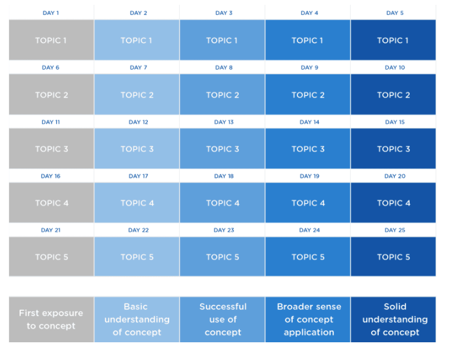
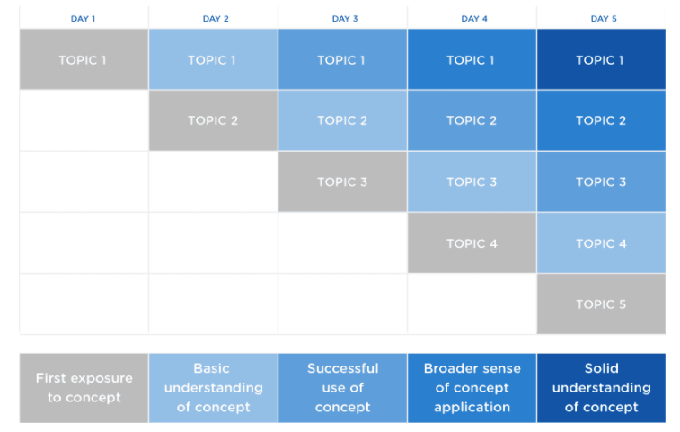

fast or learning slow: how to increase your productivity and proficiency.
These charts show the difference between learning a lot slowly or learning a lot quickly.
This first graph is an example of what it’s like to learn something until you understand it and then to move on to the next concept—this is learning with linear modules. You might grasp the concept faster, but overall it is a slower process. It’s like traditional classroom learning. The teacher lectures on a particular topic, you try it on your own through homework, become proficient, and then never use it again. Rinse and repeat. It’s a tired strategy, and it’s slowing you down.
This second graph shows an example of what it is like to learn a lot quickly with stacked modules. (The idea behind it is explained in further detail below.)
By doing things “bootcamp-style,” you will definitely learn faster. It’s why these eight week courses are effective—you’re tapping into new strategies for fast learning.
The idea behind this is to just keep learning. If you don’t fully understand the concept, that’s fine. Move on. By moving forward you force yourself to grasp the concepts that you barely understood in the first place. The pattern is not perfectly fluid, but the cycle will continue. There will be certain concepts that will keep you in the red for longer periods of time, and there are certain concepts where you’ll move quickly to the green. But the general graph holds consistent over the length of your learning experience.
Bootcamp-style learning is valuable outside of bootcamp. When it comes to being a continual self-learner, I’d say this: Keep progressing daily and don’t stay on one thing for too long. Moving quickly, and building on previous things you read, heard about, or used once or twice, will enable your learning experience. However, this requires drive. This learning mechanism only works if you aren’t satisfied with staying in the red. Push yourself to learn and move forward.
I want to emphasize something here: be prepared for a little failure. It can be really bad the first few times, but no one is perfect when they start. Proficiency requires time. Lots of time. Maybe you won’t be proud of those first attempts, but they are important foundations for the next steps, so be PROUD of what you learned at every point along the way.